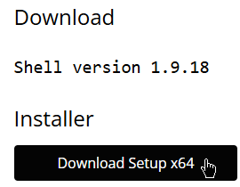

1. Run the
"setup-x64.msi"
, downloaded from the official Nilesoft website
Or just go here:
https://nilesoft.org/download
and download the Setup x64

2. Go to:
"C:\Program Files\Nilesoft Shell"
You can copy the adress and paste it into the File Epxlorer adress bar (not the search)
3. Put the everything from the
"settings"
folder from this guide into the Nilesoft Shell folder
4.
"Ctrl + Right click"
on your Task bar